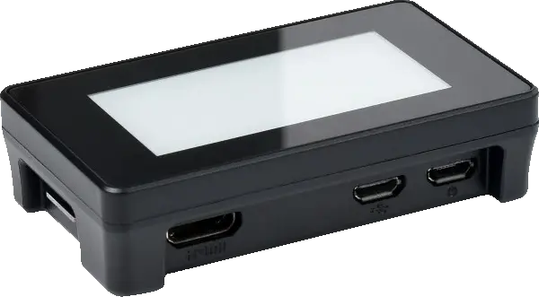
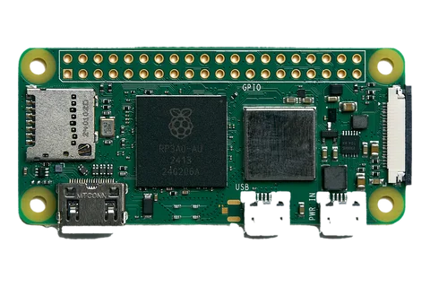
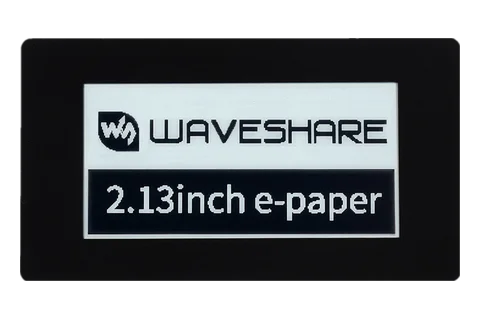
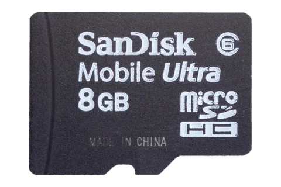
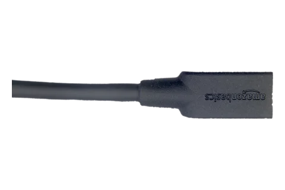

Secure Tezos Hardware Signer
Originally engineered for Baktz, Russignol is the fastest Raspberry Pi Zero 2 hardware signer — built for uncompromising security and reliability.

Why Russignol?
Physical Separation
Your private keys never leave the device. Key generation and PIN setup happen exclusively on the touchscreen.
E-Paper Touch Display
Intuitive touch controls for PIN entry. View signing activity at a glance.
Never Miss a Block
Sign blocks in under 6ms with no garbage collection pauses — at least 2x faster than comparable signers.
Effortless Setup
A companion CLI utility handles host configuration automatically — fully automated and verifiable.
- Hardened by Default: Sleep soundly with a purpose-built Linux distribution. No WiFi, no Bluetooth, no SSH, no logins — attack vectors are eliminated, not just disabled.
- Memory-Safe Implementation: Built in Rust for guaranteed memory safety. Cryptographic operations use the audited and formally verified blst library — no buffer overflows, no exploits.
- Tiny Attack Surface: Just 7.4MB compressed — fewer binaries means fewer vulnerabilities. Audit the entire system, not thousands of unknown packages.
- Instant Recovery: Back online in 3.8 seconds after a power cycle. Minimize missed blocks during restarts or unexpected reboots.
- Built to Last: No more prematurely worn-out SD cards — no risky key migrations, no downtime, no unhappy delegators. F2FS expands to use your entire card for maximum wear leveling. Your storage will outlive the hardware.
See It In Action
Watch a full walkthrough — from 3-second boot to live signing — and see how Russignol keeps your keys safe.
What You Need
Four parts, about US$70. Two of them have to be exact.

Raspberry Pi Zero 2 W
Buy the with headers variant. The plain board ships with an empty 40-pin footprint, and the display needs pins to sit on.

2.13" Touch e-Paper HAT
Waveshare part 20716, or 19493 without the case. Touch is not optional: the PIN is typed on the panel and never crosses USB.

microSD Card
8 GB or larger, high-endurance, from a brand you recognize. A bigger card is a longer-lived one, since the spare space becomes wear leveling headroom.

USB Data Cable
Micro-B at the device end, host end to match your baker. It has to carry data and not just power, and it goes in the middle micro-USB socket beside the mini-HDMI, never the PWR IN one at the corner.
Get Started
Download Host Utility
Download the setup utility for your host architecture from GitHub Releases.
AMD64
curl -L -o russignol https://github.com/RichAyotte/russignol/releases/latest/download/russignol-amd64 && chmod +x russignolAArch64
curl -L -o russignol https://github.com/RichAyotte/russignol/releases/latest/download/russignol-aarch64 && chmod +x russignolFlash the Image
Download and flash the Russignol image to your SD card. This can run on any Linux machine with an SD card reader — it doesn't need to be your baker.
./russignol image flashInitialize Device
Insert the SD card into your Pi Zero 2 and connect it via USB. On the touchscreen, create your PIN and generate your signing keys.
Configure Baker
On your baker host, run the setup wizard to configure it to use the keys on your Russignol device.
./russignol setup